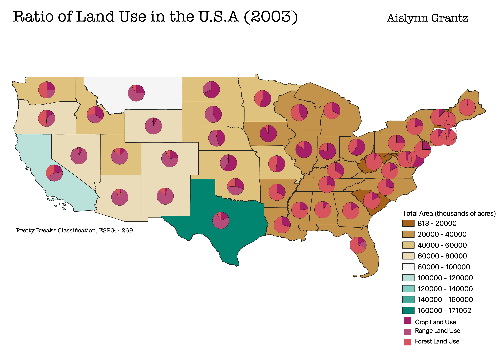

Homework 7: Proportional Choropleth Displaying Land Use in the United States, 2003
This proportional choropleth map shows the amount of land area in acres per state in the U.S. and shows the proportion of land use in each state on the mainland (disregarding Hawaii, Alaska, and other U.S. territories). The U.S. is shown in a local projection of ESPG 4269. I chose to plot land use because I am a student in the Environment, Ecology, and Energy program with a concentration in agriculture and health. Agriculture and land use in the U.S. is a critical component in how this country deals with food deserts and the allocation of homes concerning the housing crisis.

Data from GitHub
Link to Cleaned CSV Dataset
Link to geoJSON